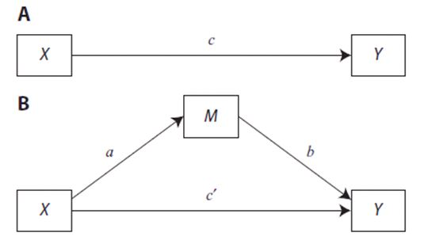
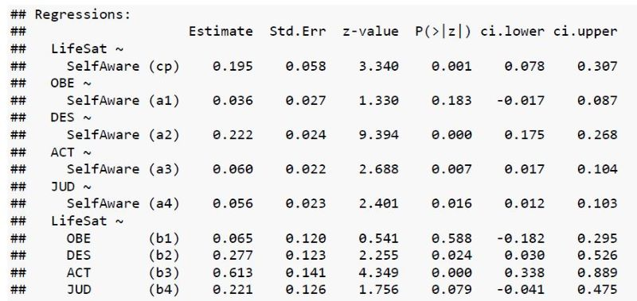
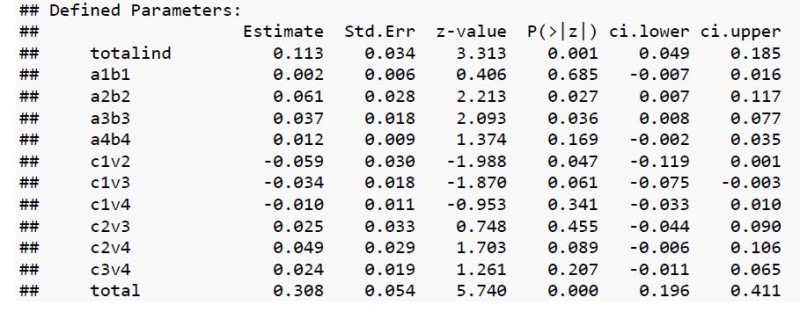

Mediation
Overview
This tutorial focuses on learning about mediation. The tutorial includes a combination of videos, text, knowledge check quizzes, and exercises.
The PowerPoint slides for the presentation in the videos are on Canvas if you want a copy. For those not enrolled in my class, these files can be found here: https://osf.io/9tgxm/
The videos (as well as others) can also be found on my YouTube channel https://www.youtube.com/channel/UC5kDZTyHZlgSgSEa3YQXOig
Packages
This tutorial uses the following packages:
lavaanfor complex modelslearnrandshinyandrmarkdownfor aspects of the tutorial
These packages should be automatically loaded within this tutorial (but you already installed learnr if you are here). If you are working outside of this tutorial (e.g., working with the data files and trying analysis in R) then you need to make sure that the necessary packages are installed on your computer.
Data
All data files exist within this package, so we can simply call them without reference to a file location.
mednomiss These data represent 534 white college students’ evaluations of African Americans. Measures address quality of contact experiences (quality), intergroup anxiety (anxiety), stereotype endorsement (stereo), perceptions of symbolic (symbolic) and realistic threats (realistic), and attitudes (att)
med is a version of the same data that includes some variables with missing values to allow for demonstration of some additional functions in lavaan.
Mindful is the datafile used in exercises. These data are from: Zheng, S., Sun, S., Huang, C., & Zou, Z. (2020). Authenticity and subjective well-being: The mediating role of mindfulness. Journal of Research in Personality, 84, 103900. https://doi.org/10.1016/j.jrp.2019.103900
The version of the datafile includes the variables SelfAware (Self Awareness), LifeSat (Life Satistfaction), and Mindful (overall mindfulness). There are also four mindfulness subscales OBE (Observing), DES (Describing), ACT (Acting with Awareness), and JUD (Non Judgmental). We will use some of subscales when examining multiple mediators.
All files are on the class’ Google Share drive if you want to work with them outside of the tutorial. They are already loaded in this tutorial so you will not need to load the data as you work. (Note: If you are not in my class, these files can be found here: https://osf.io/9tgxm/).
Videos generally range from about 10 to 15 minutes long (there are five of them).
Video 1 Basics & Definitions
Quiz 1 Basics

Video 2 Single Mediator
Quiz 2
Calculation exercise
For the model above imagine that we established a total effect = .5 and the direct effect = .3.
Video 3 R Packages
This video covers using various packages in R to run mediation analyses.
lavaan code example
set.seed(1234)
model <- '
att ~ cp*quality
anxiety ~ a*quality
att ~ b*anxiety
ab := a*b
# total effect
total := cp + (a*b)
'
fitm <- lavaan::sem(model, data = hand11nomiss, se="bootstrap")
lavaan::summary(fitm, ci=TRUE)The code above builds and runs a basic mediation model using lavaan. We’ll go through each line and then you will adapt this code to a different dataset and variables. Below we will go through line by line with text below the code explaining what is going on.
set.seed(1234)The set.seed command ensure that your analysis reproduces exactly. This is important when using bootstrapped estimates. Without set.seed, estimation starts at a different location each time, meaning results will differ slightly.
model <- '
(stuff goes in here)
'Here (above) we are building our model. You can call the model whatever you want.
att ~ cp*qualityIn lavaan, we can extract a value for various calculations by using a label(cp, in this case) and the * symbol. This piece in the model statement establishes the direct effect (cp stands for c-prime). Here we predict att from quality and label the resulting path as cp.
anxiety ~ a*qualityPredict anxiety from quality and assign that as a. (Note: these labels can be whatever, I’m just being consistent with the figure we’ve seen several times).
att ~ b*anxietyHere we establish the path between the mediator and attitudes and call that the b path.
ab := a*bThis line calculates the indirect effect. The := function means “calculate this.”
total := cp + (a*b)Calculates the total effect (i.e., y predicted by x without m in the equation). We know c-cp = ab, so cp+ab = c.
fitm <- lavaan::sem(model, data = hand11nomiss, se="bootstrap")
lavaan::summary(fitm, ci=TRUE)These two lines run the model. se = “bootstrap” bootstraps the CIs, however, it makes the code run pretty slow. The summary statement then tells lavaan to actually print the CIs.
Running analyses in lavaan
The dataset Mindful contains several variables. For the purpose of this exercise we focus on Self Awareness (SelfAware), Mindfulness, and Life Satisfaction (LifeSat). The research question addresses whether mindfulness mediates the relationship between self-awareness and life satisfaction.
Adapt the code below to the new problem. The code will likely take about 20-30 seconds to run, so be patient.
set.seed(1234)
model <- '
att ~ cp*quality
anxiety ~ a*quality
att ~ b*anxiety
ab := a*b
total := cp + (a*b)
'
fitm <- lavaan::sem(model, data = hand11nomiss, se="bootstrap")
lavaan::summary(fitm, ci=TRUE)set.seed(1234)
model <- '
LifeSat ~ cp*SelfAware
Mindfulness ~ a*SelfAware
LifeSat ~ b*Mindfulness
ab := a*b
total := cp + (a*b)
'
fitm <- lavaan::sem(model, data = Mindful, se="bootstrap")
lavaan::summary(fitm, ci=TRUE)Interpret mindfulness analysis
## Warning in bootstrap.internal(object = NULL, lavmodel. = lavmodel,
## lavsamplestats. = lavsamplestats, : lavaan WARNING: only 999 bootstrap draws
## were successful## lavaan 0.6-5 ended normally after 15 iterations
##
## Estimator ML
## Optimization method NLMINB
## Number of free parameters 5
##
## Number of observations 331
##
## Model Test User Model:
##
## Test statistic 0.000
## Degrees of freedom 0
##
## Parameter Estimates:
##
## Standard errors Bootstrap
## Number of requested bootstrap draws 1000
## Number of successful bootstrap draws 999
##
## Regressions:
## Estimate Std.Err z-value P(>|z|) ci.lower ci.upper
## LifeSat ~
## SelfAware (cp) 0.206 0.054 3.804 0.000 0.096 0.311
## Mindfulness ~
## SelfAware (a) 0.374 0.055 6.765 0.000 0.261 0.479
## LifeSat ~
## Mindflnss (b) 0.271 0.048 5.612 0.000 0.179 0.365
##
## Variances:
## Estimate Std.Err z-value P(>|z|) ci.lower ci.upper
## .LifeSat 30.617 2.303 13.295 0.000 25.858 35.221
## .Mindfulness 33.590 3.366 9.980 0.000 27.629 40.631
##
## Defined Parameters:
## Estimate Std.Err z-value P(>|z|) ci.lower ci.upper
## ab 0.101 0.027 3.815 0.000 0.055 0.160
## total 0.308 0.053 5.792 0.000 0.200 0.408Use the output to address the following questions.
This quiz focuses on aspects of the lavaan code.
Video 4 Multiple Mediators
R Code for Multiple Mediators
This section reviews the lavaan code for running multiple mediator models. First, we’ll see the full code then review aspects of the code and output. As before look below the code block for comments on the specific code.
model <- '
att ~ cp*quality
stereo ~ a1*quality
anxiety ~ a2*quality
symbolic ~ a3*quality
realistic ~ a4*quality
att ~ b1*stereo
att ~ b2*anxiety
att ~ b3*symbolic
att ~ b4*realistic
totalind := abs(a1*b1)+abs(a2*b2)+abs(a3*b3)+abs(a4*b4)
a1b1 := a1*b1
a2b2 := a2*b2
a3b3 := a3*b3
a4b4 := a4*b4
c1v2 := (a1*b1)-(a2*b2)
c1v3 := (a1*b1)-(a3*b3)
c1v4 := (a1*b1)-(a4*b4)
c2v3 := (a2*b2)-(a3*b3)
c2v4 := (a2*b2)-(a4*b4)
c3v4 := (a3*b3)-(a4*b4)
total := cp + (a1*b1)+(a2*b2)+(a3*b3)+(a4*b4)
stereo~~anxiety
stereo~~symbolic
stereo~~realistic
anxiety~~symbolic
anxiety~~realistic
symbolic~~realistic
'
fitm2 <- lavaan::sem(model, data = hand11b, se="bootstrap", missing="ML")
lavaan::summary(fitm2, ci=TRUE)Now, line by line.
model <- ' #
att ~ cp*qualityAttitude is still predicted by cp*quality. There is only one direct path as there remains a single predictor and a single dv (complex models can have two or more of both).
stereo ~ a1*quality
anxiety ~ a2*quality
symbolic ~ a3*quality
realistic ~ a4*qualityThese are the mediators. Each is being predicted by quality to form the a paths (predictor to mediator). Be sure to use a consistent order here (e.g. always use 1 for formulae involving stereo and 2 for those involving anxiety).
att ~ b1*stereo
att ~ b2*anxiety
att ~ b3*symbolic
att ~ b4*realisticThese are the paths from each mediator to the dv (the b paths). Note how 1 is used for stereo, etc. in order to be consistent across the analyses.
totalind := abs(a1*b1)+abs(a2*b2)+abs(a3*b3)+abs(a4*b4)
a1b1 := a1*b1
a2b2 := a2*b2
a3b3 := a3*b3
a4b4 := a4*b4Here are the indirect effects. Each a path times its corresponding b path.
c1v2 := (a1*b1)-(a2*b2)
c1v3 := (a1*b1)-(a3*b3)
c1v4 := (a1*b1)-(a4*b4)
c2v3 := (a2*b2)-(a3*b3)
c2v4 := (a2*b2)-(a4*b4)
c3v4 := (a3*b3)-(a4*b4)These are the contrasts. I used the notation 1v2 to indicate what was being compared. 1 = Stereotype, 2 = Anxiety, 3 = Symbolic, and 4 = Realistic (this is why we need to be consistent in the labeling!). The final one c3v4 therefore compares Symbolic (3) and Realistic (4).
total := cp + (a1*b1)+(a2*b2)+(a3*b3)+(a4*b4)
stereo~~anxiety
stereo~~symbolic
stereo~~realistic
anxiety~~symbolic
anxiety~~realistic
symbolic~~realisticThe total effect now includes all the indirect effects. Alternatively, this could have been cp + totalind.
The correlations between all of the mediators are required for a correct solution. The ~~ estimates a correlation.
fitm2 <- lavaan::sem(model, data = hand11b, se="bootstrap", missing="ML")
lavaan::summary(fitm2, ci=TRUE)Finally, we run and summarize. As before we used se = “bootstrap” to get our confidence intervals. Missing = “ML” deals with missing data using Maximum Likelihood estimation. Alternatively, you could create 20 multiply imputed datasets and run this code on all 20 … but that would take forever.
Exercise Multiple Mediators
For this exercise, you will use the Mindful data and focus on Self Awareness (SelfAware) and Life Satisfaction (LifeSat). Instead of using the overall measure of mindfulness, for this example we use the four mindfulness subscales OBE (Observing), DES (Describing), ACT (Acting with Awareness), and JUD (Non Judgmental) as our mediators. Adapt the code below to our dataset.
model <- '
att ~ cp*quality
stereo ~ a1*quality
anxiety ~ a2*quality
symbolic ~ a3*quality
realistic ~ a4*quality
att ~ b1*stereo
att ~ b2*anxiety
att ~ b3*symbolic
att ~ b4*realistic
totalind := abs(a1*b1)+abs(a2*b2)+abs(a3*b3)+abs(a4*b4)
a1b1 := a1*b1
a2b2 := a2*b2
a3b3 := a3*b3
a4b4 := a4*b4
c1v2 := (a1*b1)-(a2*b2)
c1v3 := (a1*b1)-(a3*b3)
c1v4 := (a1*b1)-(a4*b4)
c2v3 := (a2*b2)-(a3*b3)
c2v4 := (a2*b2)-(a4*b4)
c3v4 := (a3*b3)-(a4*b4)
total := cp + (a1*b1)+(a2*b2)+(a3*b3)+(a4*b4)
stereo~~anxiety
stereo~~symbolic
stereo~~realistic
anxiety~~symbolic
anxiety~~realistic
symbolic~~realistic
'
fitm2 <- lavaan::sem(model, data = hand11b, se="bootstrap", missing="ML")
lavaan::summary(fitm2, ci=TRUE)Adapt your code below. This analysis might take a minute, so don’t get frustrated if nothing happens immediately. The summary command here is a lavaan command, not the base R summary that we use all the time.
NOTE: It appears that the se=“bootstrap” command conflicts with the learnr environment for this analysis (it likely uses too many resources). If you are getting an error such as !is.null(BOOT) is not TRUE you can remove the se=“bootstrap” part of the sem command and the code should run (but it won’t give the same 95% CI as the bootstrapped errors).
## This is lavaan 0.6-5## lavaan is BETA software! Please report any bugs.model <- '
LifeSat ~ cp*SelfAware
OBE ~ a1*SelfAware
DES ~ a2*SelfAware
ACT ~ a3*SelfAware
JUD ~ a4*SelfAware
LifeSat ~ b1*OBE
LifeSat ~ b2*DES
LifeSat ~ b3*ACT
LifeSat ~ b4*JUD
totalind := abs(a1*b1)+abs(a2*b2)+abs(a3*b3)+abs(a4*b4)
a1b1 := a1*b1
a2b2 := a2*b2
a3b3 := a3*b3
a4b4 := a4*b4
c1v2 := (a1*b1)-(a2*b2)
c1v3 := (a1*b1)-(a3*b3)
c1v4 := (a1*b1)-(a4*b4)
c2v3 := (a2*b2)-(a3*b3)
c2v4 := (a2*b2)-(a4*b4)
c3v4 := (a3*b3)-(a4*b4)
total := cp + (a1*b1)+(a2*b2)+(a3*b3)+(a4*b4)
OBE~~DES
OBE~~ACT
OBE~~JUD
DES~~ACT
DES~~JUD
ACT~~JUD
'
fitm <- lavaan::sem(model, data = Mindful, missing="ML")
lavaan::summary(fitm, ci=TRUE)Interpreting output
Here is a highly edited version of the output for our analysis using bootstrapped CIs. A quiz follows.


Video 5 Additional Issues
Additional Issues
Additional Issues Quiz